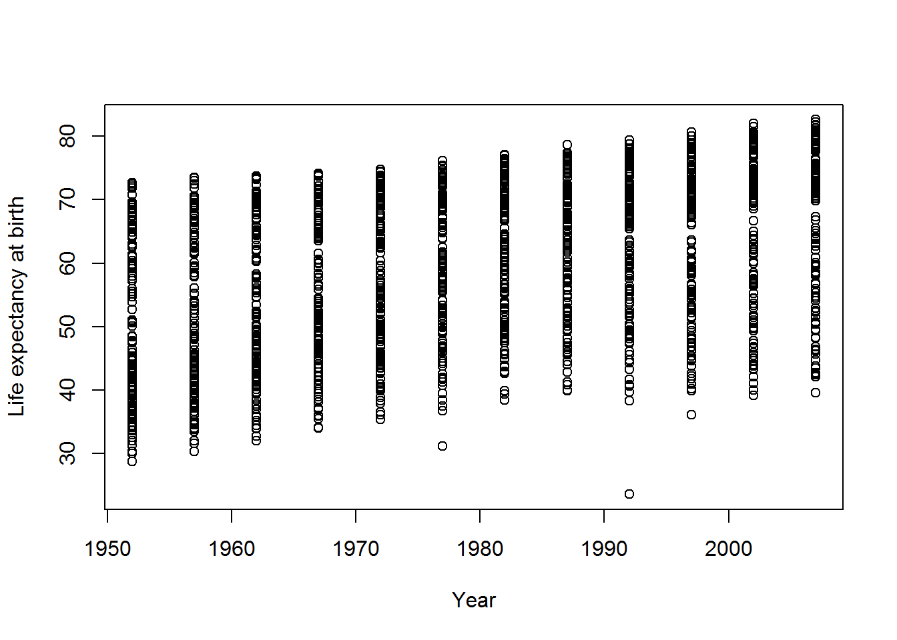
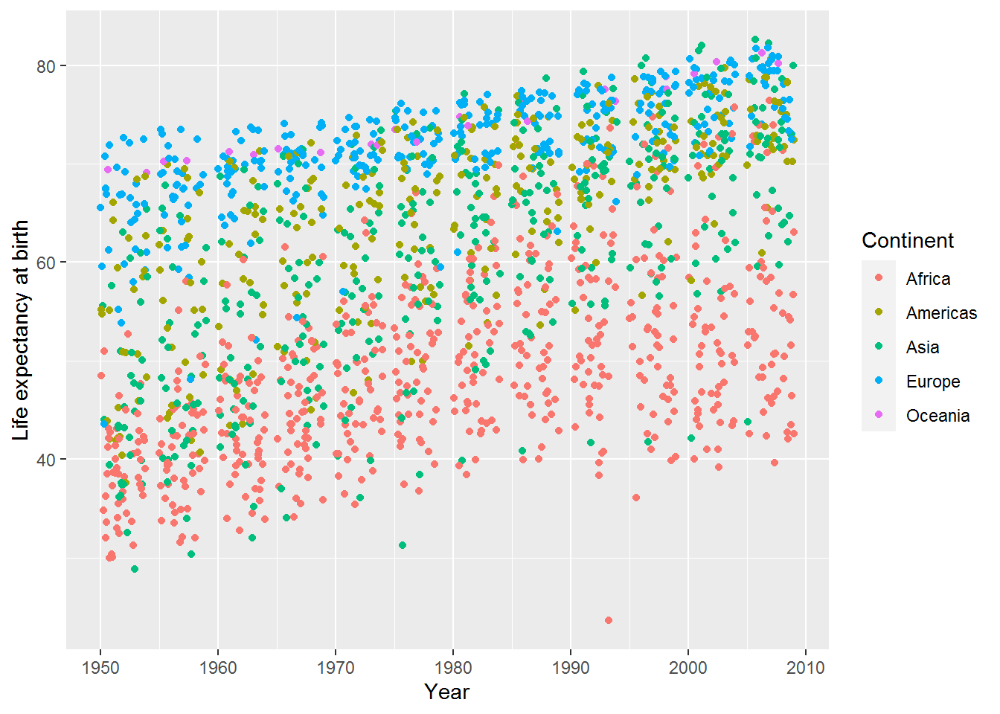
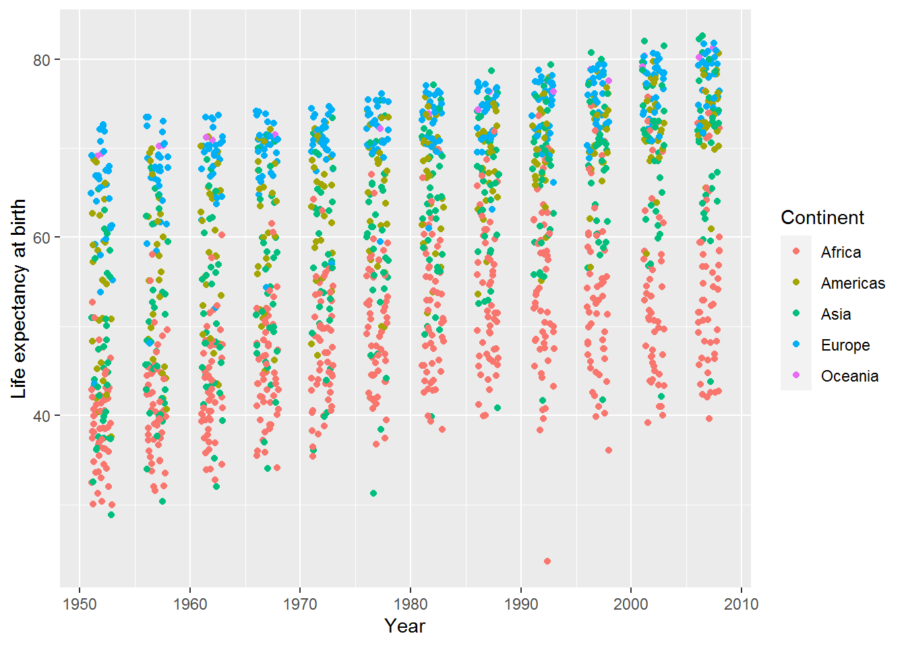

Chapter 3 Visualising data in the tidyverse
By the end of this tutorial you will:
- Have explored a key example visualisation in depth, using packages in the tidyverse.
- Understand what happens when you tweak this in various ways.
- Know where to look for ideas and code for other visualisations.
3.1 Getting setup
You will need to create a new R or Markdown (Rmd) file (depending on your preference – I recommend Markdown) and save it somewhere sensible where you can find it again in a few months time.
We will be using the Gapminder dataset dataset from last time.
gap <- read.csv("gapminder.csv")Previously we used the “base” plot function:
plot(lifeExp ~ year,
data = gap,
xlab = "Year",
ylab = "Life expectancy at birth")
We can do better than this.
A collection of packages called the tidyverse has become an industry standard in R (though see also an alternate view).
This command will include tidyverse and make a bit of noise as it arrives…
library(tidyverse)If that didn’t work, there are two things you can do. You could try saving your R/Rmd file. This may prompt RStudio to notice that the package isn’t installed and ask you if you want to install it.
Alternatively, just use the install.packages command as per last week:
install.packages("tidyverse")To see if that worked, run this:
ggplot(data = gap,
mapping = aes(x = year, y = lifeExp)) +
geom_point() +
labs(x = "Year",
y = "Life expectancy at birth")Ta-da: a graph! This used ggplot, which is part of the ggplot2 package which, in turn, is part of tidyverse.
The rest of this tutorial will explore how to develop this into a more useful visualisation.
3.2 An interlude on functions
Previously, I described R functions as magical computational machines which take inputs and transform them in some way, giving an output.
Above, we have seen that the output of a function can be a picture. It can also be a vibration (that’s how sounds are made) or anything else that can be plugged into a computer. It might be a humble number, like a mean.
Sometimes I’ll call functions “commands” and sometimes I’ll call the inputs “options” or “parameters” or “arguments.” Hopefully it will be clear from the context what I mean. If not, even after scratching your head, then do ask!
3.3 A scatterplot in ggplot
Let’s build the previous example step-by-step.
ggplot(data = gap,
mapping = aes(x = year, y = lifeExp))This first part tells ggplot what data to use and an aesthetic mapping. Aesthetics in tidyverse are properties of the objects in your plot and the mapping tells ggplot how those objects relate to your data. Two basic properties are x and y locations on a plot. Here they have been mapped to year and life expectancy, respectively.
When you run that code, you will see that nothing was actually done with the mappings. The next stage is to add a geom – a geometric object – for each row of data. That’s where the point geom, geom_point, comes in:
ggplot(data = gap,
mapping = aes(x = year, y = lifeExp)) +
geom_point()
Note how the “+” symbol is used here to mean adding elements to a plot. The meaning of “+” depends on context.
I could also have made this plot by giving a name to the first part:
the_basic_plot <- ggplot(data = gap,
mapping = aes(x = year, y = lifeExp))Then added this to the geom:
plot_with_stuff_on <- the_basic_plot + geom_point()The plot hasn’t displayed yet, though.
3.3.1 Warm-up activity
What do you need to do to get the
plot_with_stuff_onplot to display?How could you change the axis labels on
plot_with_stuff_on? (Look up for a clue!)
3.3.2 Answer
- What do you need to do to get the plot to display?
plot_with_stuff_on- How could you change the axis labels on
plot_with_stuff_on?
Either:
plot_with_stuff_on +
labs(x = "Year",
y = "Life expectancy at birth")
Or:
final_plot <- plot_with_stuff_on +
labs(x = "Year",
y = "Life expectancy at birth")
final_plot3.4 Another aesthetic: colour
This is a simple change, but begins to highlight patterns in the data. Here I have just copied and pasted a chunk from above and added the mapping colour = continent.
ggplot(data = gap,
mapping = aes(x = year,
y = lifeExp,
colour = continent)) +
geom_point() +
labs(x = "Year",
y = "Life expectancy at birth")Can you spot any patterns in the graph?
A legend has appeared at the right hand side explaining what the colours represent.
By default the legend title is the same as the variable name. In this case it’s “continent” which is clear, but sometimes it will be something like “group_2_id” which is less pleasing on the eye (and I cringe when I see something like this in a journal article).
The legend title is easy to change by adding another option to labs:
ggplot(data = gap,
mapping = aes(x = year,
y = lifeExp,
colour = continent)) +
geom_point() +
labs(x = "Year",
y = "Life expectancy at birth",
colour = "Continent")3.5 Another geom: jitter
Making graphs often involves playing around with different ways of showing the information. Here’s the jitter geom, which is the same as the point geom but with “a small amount of random variation to the location of each point” (see ?geom_jitter).
ggplot(data = gap,
mapping = aes(x = year,
y = lifeExp,
colour = continent)) +
geom_jitter() +
labs(x = "Year",
y = "Life expectancy at birth",
colour = "Continent")
3.5.1 Activity to develop your help-searching skill!
How can you vary the amount of jitter?
Tip: you might find the help useful:
?geom_jitterAlternatively, try Google.
If that doesn’t deliver anything useful, try this reference link.
3.5.2 Answer
There are two options, width and height, which specify how wide the jitteriness is. Set these to zero, and the plot is indistinguishable from the point geom:
ggplot(data = gap,
mapping = aes(x = year,
y = lifeExp,
colour = continent)) +
geom_jitter(width = 0, height = 0) +
labs(x = "Year",
y = "Life expectancy at birth",
color = "Continent")
Here’s a little jitter added only to the width:
ggplot(data = gap,
mapping = aes(x = year, y = lifeExp, colour = continent)) +
geom_jitter(width = 1, height = 0) +
labs(x = "Year",
y = "Life expectancy at birth",
color = "Continent")
3.6 Aggregating/summarising data by group
Last time, we saw how to calculate the mean of a variable. Here’s the mean of life expectancy, across all countries and years:
mean(gap$lifeExp)## [1] 59.47444I don’t know what to make of that!
Typically we want to calculate means by group rather than for a whole variable. This is known as aggregating or summarising by group. For instance, looking at the plots above it seems that there will be a mean difference in life expectancy between continents, and it would be interesting to see that.
For this, we will use dplyr (pronounced “DEE-ply-er”). It’s part of tidyverse so already included, but it’s useful to know the name of this specific part for when you are searching for help.
I’m going to work through an example in excruciating detail, but it will be worth it I promise.
The punchline is that to calculate mean life expectancy by year and continent, you do this:
mean_life_exp_gap <- gap %>%
group_by(year, continent) %>%
summarise(mean_life_exp = mean(lifeExp))## `summarise()` regrouping output by 'year' (override with `.groups` argument)(Have a look and see.)
Here’s a longer worked example.
Step 1. Use group_by to tell R what variables you want to group the data by. The first parameter of group_by is the dataset you want to group. The remaining parameters are the variables in that dataset to group by:
grouped_gap <- group_by(gap, year, continent)So this says, group the gap data frame by year and continent.
This new variable, grouped_gap is a grouped data frame. It has all the same information as before, plus a little note (semi-hidden) to say that analyses on this should be grouped.
Here’s how to peek at this note:
group_vars(grouped_gap)## [1] "year" "continent"Step 2. Use summarise on this grouped data frame to calculate what you want. The first argument of summarise is the data frame (grouped or otherwise) followed by new variable names and what you want them to contain.
summarised_grouped_gap <- summarise(grouped_gap,
mean_life_exp = mean(lifeExp))## `summarise()` regrouping output by 'year' (override with `.groups` argument)Let’s have a look at the top 10 rows:
head(summarised_grouped_gap, 10)## # A tibble: 10 x 3
## # Groups: year [2]
## year continent mean_life_exp
## <int> <chr> <dbl>
## 1 1952 Africa 39.1
## 2 1952 Americas 53.3
## 3 1952 Asia 46.3
## 4 1952 Europe 64.4
## 5 1952 Oceania 69.3
## 6 1957 Africa 41.3
## 7 1957 Americas 56.0
## 8 1957 Asia 49.3
## 9 1957 Europe 66.7
## 10 1957 Oceania 70.3It worked! We could now use this in ggplot (and shall do so below).
3.6.1 Activity
Do the same again but this time calculate means only by year, averaging across continents.
3.6.2 Answer
grouped_gap_year <- group_by(gap, year)
summarised_grouped_year <- summarise(grouped_gap_year,
mean_life_exp = mean(lifeExp))## `summarise()` ungrouping output (override with `.groups` argument)summarised_grouped_year## # A tibble: 12 x 2
## year mean_life_exp
## <int> <dbl>
## 1 1952 49.1
## 2 1957 51.5
## 3 1962 53.6
## 4 1967 55.7
## 5 1972 57.6
## 6 1977 59.6
## 7 1982 61.5
## 8 1987 63.2
## 9 1992 64.2
## 10 1997 65.0
## 11 2002 65.7
## 12 2007 67.03.7 Pipes
R analyses often feel like making information flow along a pipe, transforming it in various ways as it goes. Maybe reshaping it, selecting some variables, filtering, grouping, calculating. Finally, out flows an answer.
This leads to another member of the tidyverse family, magrittr, named after René Magritte because of his 1929 painting showing a pipe and a caption “Ceci n’est pas une pipe” (“This is not a pipe”).

You may have noticed that both group_by and summarise had a data frame as their first argument. They also both outputted a data frame.
The forward pipe operator, %>%, allows you to pass the data frame along your information flow, without having to save results in interim variables.
You start with the name of the input data frame and then pipe it into the first function. For example, here is how to group the data:
gap %>%
group_by(year, continent)As before you can then save the result:
grouped <- gap %>%
group_by(year, continent)To flow this onto summarise, just add another pipe like so:
grouped <- gap %>%
group_by(year, continent) %>%
summarise(mean_life_exp = mean(lifeExp))## `summarise()` regrouping output by 'year' (override with `.groups` argument)The %>% is purely designed to make the flow of information easier to see and hopefully also easier to design.
3.8 Plot the mean life expectancy by continent
By here you hopefully get the gist of how to use pipes to group data frames and summarise them. There will be further opportunities to practice this skill.
Here’s an aggregated data frame with mean life expectancy by year and continent:
mean_life_exp_gap <- gap %>%
group_by(year, continent) %>%
summarise(mean_life_exp = mean(lifeExp))## `summarise()` regrouping output by 'year' (override with `.groups` argument)You can view this to check the information is as you expect:
View(mean_life_exp_gap)Here are the variable names, for ease of reference.
names(mean_life_exp_gap)## [1] "year" "continent" "mean_life_exp"3.8.1 Actvity
Now your challenge is to plot the mean life expectancy by year, with colour showing the continent.
You could try adapting an example from above to help you.
3.8.2 Answer
ggplot(mean_life_exp_gap, aes(x = year,
y = mean_life_exp,
colour = continent)) +
geom_point()3.9 Yet another geom: line
Instead of plotting points for each year, you may wish to join the data with lines. Here’s how – just use geom_line:
ggplot(mean_life_exp_gap, aes(x = year,
y = mean_life_exp,
colour = continent)) +
geom_line() +
labs(x = "Year",
y = "Life expectancy at birth",
colour = "Continent")3.9.1 Activity
How could you add points back to the lines?
3.9.2 Answer
Simply use “+” again:
ggplot(mean_life_exp_gap, aes(x = year,
y = mean_life_exp,
colour = continent)) +
geom_point() +
geom_line()I’ve been a bit lazy here and haven’t bothered changing the axis labels and legend title. That is fine when playing around with different visualisations and learning. Just remember to tidy it all up before adding to a written report!
3.10 Filtering data along the pipeline
Analysing by continent clearly doesn’t do the data justice: in the jittered points we saw there was loads of variation within continent.
The mean plots highlighted that improvement in life expectancy in Africa stalled around 1990. I wonder if this was the same for all countries therein?
The next tidyverse function we will explore to help us is called filter. (See the help for lots of examples using a Star Wars dataset.)
Here is how to filter the data so we only have rows for Africa:
gap %>%
filter(continent == "Africa") %>%
head(10)## country continent year lifeExp pop gdpPercap
## 1 Algeria Africa 1952 43.077 9279525 2449.008
## 2 Algeria Africa 1957 45.685 10270856 3013.976
## 3 Algeria Africa 1962 48.303 11000948 2550.817
## 4 Algeria Africa 1967 51.407 12760499 3246.992
## 5 Algeria Africa 1972 54.518 14760787 4182.664
## 6 Algeria Africa 1977 58.014 17152804 4910.417
## 7 Algeria Africa 1982 61.368 20033753 5745.160
## 8 Algeria Africa 1987 65.799 23254956 5681.359
## 9 Algeria Africa 1992 67.744 26298373 5023.217
## 10 Algeria Africa 1997 69.152 29072015 4797.295Note the double equals, ==, not to be confused with = which is used to set inputs (also known as arguments). To see how it works, compare:
11 + 3 == 14## [1] TRUEAnd:
11 + 3 == 2## [1] FALSENow I’m going to try piping this filtered data frame directly into ggplot, without saving it. This should work because ggplot’s first argument is the data frame.
gap %>%
filter(continent == "Africa") %>%
ggplot(aes(x = year, y = lifeExp, colour = country)) +
geom_point() +
geom_line()Well… it did… but the plot is very busy and I’m not sure I could distinguish between all those colours!
Let’s try again without the legend to see what’s going on.
At this point you may wonder, “How on earth will I be able to remember all these commands?” I will share a trick.

Attempt 2:
gap %>%
filter(continent == "Africa") %>%
ggplot(aes(x = year, y = lifeExp, colour = country)) +
geom_point() +
geom_line() +
theme(legend.position = "none")3.10.1 Activity
One of the countries’ life expectancies dropped below 25. Can you work out which one it was by using filter?
Tip: == was equals. You can use < for less than.
2 < 3## [1] TRUE3.10.2 Answer
gap %>%
filter(lifeExp < 25)## country continent year lifeExp pop gdpPercap
## 1 Rwanda Africa 1992 23.599 7290203 737.0686So the answer is Rwanda.
3.11 Other handy tools: select, slice, bind, and arrange
Often you will have datasets with a huge number of variables and will want to select a few of those to make the tables easier to read. The command for that is select; give it the names of the variables you want.
Another useful function is arrange which sorts a data frames by the variable(s) you provide.
Here is an example illustrating both. I have also added the operator & for “and.”
gap %>%
filter(year == 2007 &
continent == "Africa") %>%
arrange(lifeExp) %>%
select(country, lifeExp)## country lifeExp
## 1 Swaziland 39.613
## 2 Mozambique 42.082
## 3 Zambia 42.384
## 4 Sierra Leone 42.568
## 5 Lesotho 42.592
## 6 Angola 42.731
## 7 Zimbabwe 43.487
## 8 Central African Republic 44.741
## 9 Liberia 45.678
## 10 Rwanda 46.242
## 11 Guinea-Bissau 46.388
## 12 Congo, Dem. Rep. 46.462
## 13 Nigeria 46.859
## 14 Somalia 48.159
## 15 Malawi 48.303
## 16 Cote d'Ivoire 48.328
## 17 South Africa 49.339
## 18 Burundi 49.580
## 19 Cameroon 50.430
## 20 Chad 50.651
## 21 Botswana 50.728
## 22 Uganda 51.542
## 23 Equatorial Guinea 51.579
## 24 Burkina Faso 52.295
## 25 Tanzania 52.517
## 26 Namibia 52.906
## 27 Ethiopia 52.947
## 28 Kenya 54.110
## 29 Mali 54.467
## 30 Djibouti 54.791
## 31 Congo, Rep. 55.322
## 32 Guinea 56.007
## 33 Benin 56.728
## 34 Gabon 56.735
## 35 Niger 56.867
## 36 Eritrea 58.040
## 37 Togo 58.420
## 38 Sudan 58.556
## 39 Madagascar 59.443
## 40 Gambia 59.448
## 41 Ghana 60.022
## 42 Senegal 63.062
## 43 Mauritania 64.164
## 44 Comoros 65.152
## 45 Sao Tome and Principe 65.528
## 46 Morocco 71.164
## 47 Egypt 71.338
## 48 Algeria 72.301
## 49 Mauritius 72.801
## 50 Tunisia 73.923
## 51 Libya 73.952
## 52 Reunion 76.442This filters gap to data from 2007 and Africa, sorts it by life expectancy, and then selects the country and life expectancy variables.
The slice family of functions can be used to zoom into to the top or bottom slices of rows, or a random sample.
Here’s an example. First save the previous chunk results above in africa2007:
africa2007 <- gap %>%
filter(year == 2007 &
continent == "Africa") %>%
arrange(lifeExp) %>%
select(country, lifeExp)The following R code saves the “head” of the dataset, which has the lowest life expectancies. The n is 3, so three rows are returned. Note the single = here: it’s an parameter setting n to 3 rather than an equality == checking whether n is 3.
africa2007min <- africa2007 %>%
slice_head(n = 3)
africa2007min## country lifeExp
## 1 Swaziland 39.613
## 2 Mozambique 42.082
## 3 Zambia 42.384Do this again for the tail, i.e., the bottom of the dataset, which is actually the highest values for life expectancy.
africa2007max <- africa2007 %>%
slice_tail(n = 3)
africa2007max## country lifeExp
## 1 Tunisia 73.923
## 2 Libya 73.952
## 3 Reunion 76.442We can bind the two data frames together again using bind_rows:
top_and_bottom <- bind_rows(africa2007min, africa2007max)
top_and_bottom## country lifeExp
## 1 Swaziland 39.613
## 2 Mozambique 42.082
## 3 Zambia 42.384
## 4 Tunisia 73.923
## 5 Libya 73.952
## 6 Reunion 76.4423.12 Filtering for members of a vector
The top_and_bottom data frame has the names of countries with the top and bottom three life expectancies.
top_and_bottom$country## [1] "Swaziland" "Mozambique" "Zambia" "Tunisia" "Libya"
## [6] "Reunion"Next we are going to filter the data set to only these countries, using the %in% operator which returns true if a value is in the vector you provide and false otherwise.
Here are two examples:
"Libya" %in% top_and_bottom$country## [1] TRUE"Uganda" %in% top_and_bottom$country## [1] FALSEgap %>%
filter(country %in% top_and_bottom$country) %>%
ggplot(aes(x = year,
y = lifeExp,
colour = country)) +
geom_line()We can add Rwanda back in by using the c operator. Here’s an example to show how it works:
some_numbers <- c(1,2,3)
c(some_numbers,4)## [1] 1 2 3 4Back to the graph. Below I have also enlarged the size of the lines to make the colours easier to distinguish.
gap %>%
filter(country %in% c(top_and_bottom$country, "Rwanda")) %>%
ggplot(aes(x = year,
y = lifeExp,
colour = country)) +
geom_line(size = 1) +
labs(x = "Year",
y = "Mean life expectancy (years)",
colour = "Country")You might now consider a qualitative analysis of these countries (or lookup Wikipedia, for the purposes of a weekly R ехеrcise) to conjecture why there are these differences.
3.13 Final challenge
3.13.1 Activity
Plot life expectancy against GDP per capita for all countries in the dataset at the most recent time point. Colour the points by continent.
3.13.2 Answer
Here’s how I did it.
First, check the variable names:
names(gap)## [1] "country" "continent" "year" "lifeExp" "pop" "gdpPercap"So we want lifeExp and gdpPercap.
The most recent year is:
max(gap$year)## [1] 2007(You could also find that by looking at the data frame using View.)
Now make filter and make the graph in one go:
gap %>%
filter(year == 2007) %>%
ggplot(aes(x = gdpPercap, y = lifeExp, colour = continent)) +
geom_point() +
labs(y = "Mean life expectancy (years)",
x = "GDP per capita (US$, inflation-adjusted)",
colour = "Continent",
title = "Life expectancy and GDP per capita in 2007")